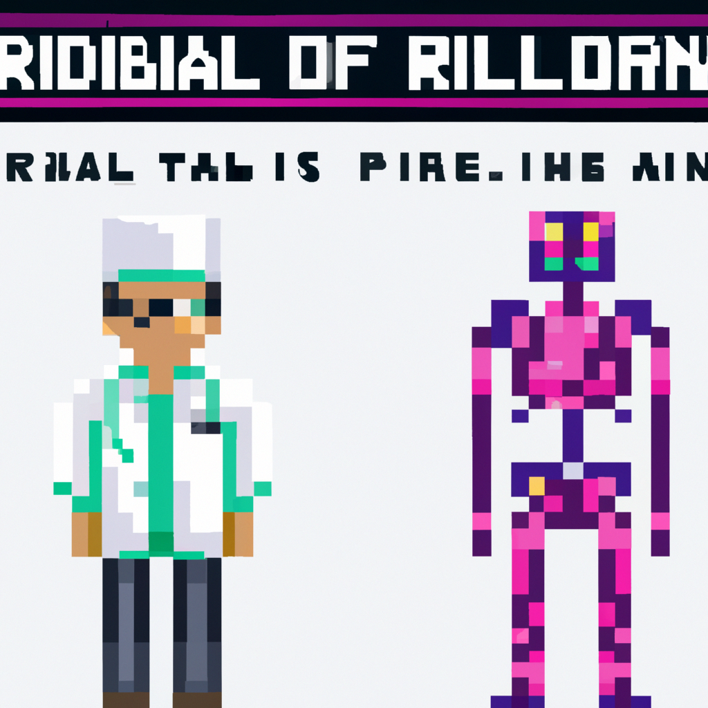

Why AI will never replace the radiologist
In recent years, Artificial Intelligence (AI) has been increasing in popularity and usage in the field of radiology. AI has the potential to reduce healthcare costs and increase accuracy by helping radiologists make faster and more accurate diagnoses. However, despite the advantages of AI in radiology, I believe that AI will never replace the radiologist.
Radiology is a complex field that requires a deep understanding of the human body and its many systems. The ability to interpret medical images accurately requires medical knowledge and experience, something that AI cannot replicate. AI is only as accurate as the data that it has access to, and while AI can be trained to recognize certain patterns, it can never truly understand the complexities of the human body the way a human radiologist can.
AI may be able to detect and diagnose certain conditions, but a radiologist is still needed to confirm the diagnosis and ensure that the best course of action is taken. Radiologists are also needed to provide second opinions and interpretations that may be missed by AI.
Finally, radiologists are also needed to provide a human touch in the medical field. AI technology may be able to provide accurate diagnoses, but it cannot provide the same level of care and compassion that a human radiologist can.
In conclusion, while AI has the potential to revolutionize the field of radiology, I believe that it will never replace the radiologist. AI cannot replicate the knowledge, experience, and compassion that radiologists possess, and it is these qualities that make radiologists irreplaceable.